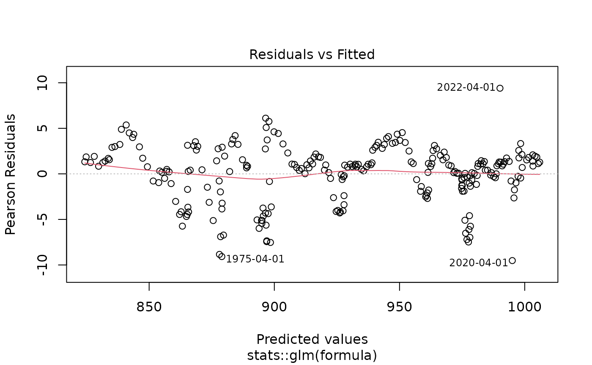
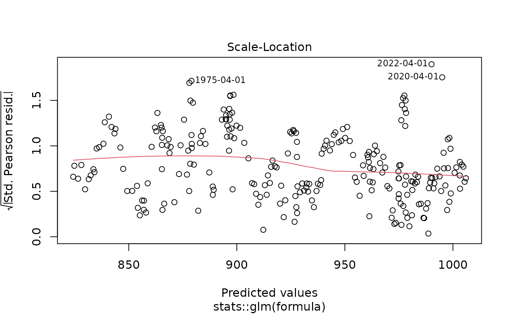
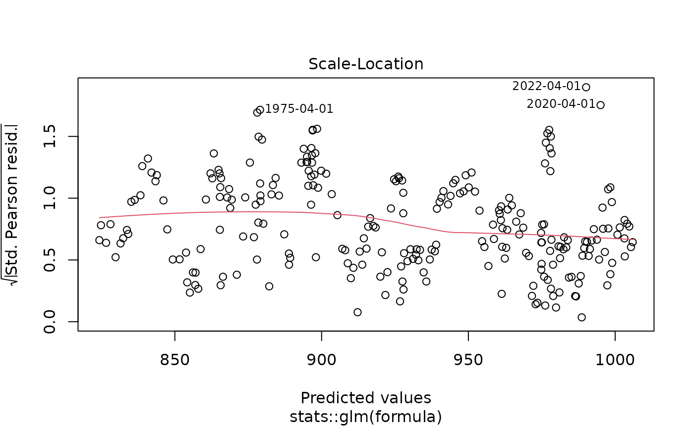
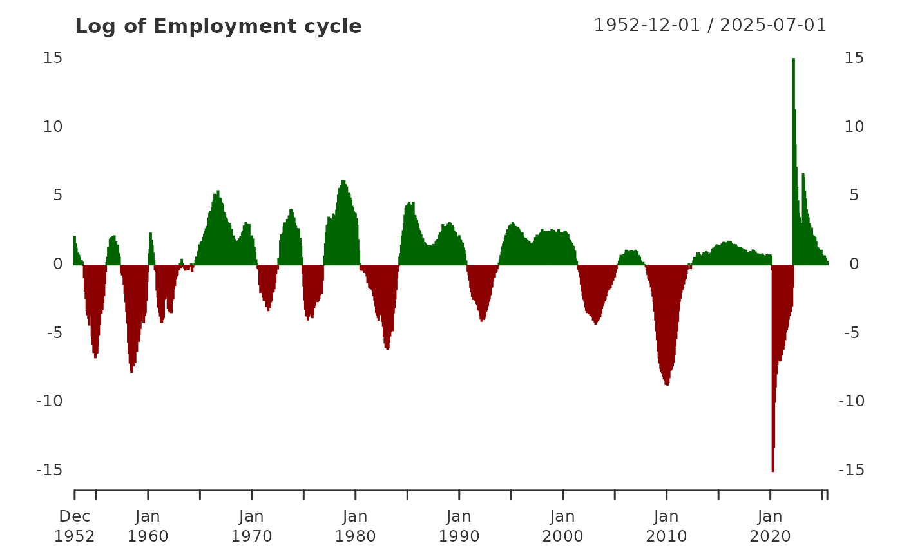

Introduction
The neverhpfilter package consists of 2
functions, 12 FRED economic data sets, Robert Shiller’s
U.S. Stock Market and CAPE Ratio data from 1871 through 2023, and a
data.frame containing the original filter estimates found
on table 2 of Hamilton
(2017) <doi:10.3386/w23429>. All data objects are stored as
.Rdata files in eXtensible Time Series (xts)
format.
One of the first things to know about the neverhpfilter
package is that it’s functions accept and output, xts
objects.
An xts object is a list consisting of a
vector index of some date/time class paired with a
matrix object containing data of type numeric.
data.table is also heavily used in finance and has
efficient date/time indexing capabilities as well. It is useful when
working with large data.frame like lists containing vectors of multiple
data types of equal length. If using data.table or some
other index based time series data object, merging the xts
objects created by functions of this package should be fairly easy. Note
xts is a dependency listed under the “Suggests” field of
data.table DESCRIPTION file.
For more information on xts objects, go here and here.
yth_glm
The yth_glm function wraps glm and
primarily exists to model the output for the yth_filter. On
that note, the function API allows one to use the ... to
pass any additional arguments to glm.
The yth_filter returns an object of class
glm, so one can use all generic methods associated with
glm objects. Here is an example of passing the results of a
yth_glm model to the plot function, which
outputs the standard plot diagnostics associated with the method.
library(neverhpfilter)
data(GDPC1)
log_RGDP <- 100*log(GDPC1)
gdp_model <- yth_glm(log_RGDP["1960/"], h = 8, p = 4)
plot(gdp_model) 

yth_filtered
This is the main function of the package. It both accepts and outputs
xts objects. The resulting output contains various series
discussed in Hamilton (2017). These are a user defined combination of
the original, trend, cycle, and random walk series. See documentation
and the original paper for further details.
gdp_filtered <- yth_filter(log_RGDP, h = 8, p = 4)
tail(gdp_filtered, 16)## GDPC1 GDPC1.trend GDPC1.cycle GDPC1.random
## 2021-07-01 997.9125 998.6146 -0.7021626 3.433573
## 2021-10-01 999.6996 999.2250 0.4745744 4.541104
## 2022-01-01 999.4418 998.0482 1.3935290 5.685544
## 2022-04-01 999.5119 991.0471 8.4648676 13.994958
## 2022-07-01 1000.1829 998.5432 1.6396952 7.127129
## 2022-10-01 1001.0073 999.1247 1.8825844 6.872664
## 2023-01-01 1001.6970 998.0610 3.6359814 6.191576
## 2023-04-01 1002.3021 1000.9223 1.3797813 5.238868
## 2023-07-01 1003.3679 1001.7246 1.6432798 5.455458
## 2023-10-01 1004.1535 1003.4622 0.6913126 4.453942
## 2024-01-01 1004.5575 1003.3985 1.1590058 5.115713
## 2024-04-01 1005.2937 1003.5638 1.7299355 5.781821
## 2024-07-01 1006.0504 1004.5563 1.4941034 5.867509
## 2024-10-01 1006.6556 1005.1812 1.4743859 5.648319
## 2025-01-01 1006.5297 1005.7135 0.8161385 4.832713
## 2025-04-01 1007.2609 1006.3020 0.9589198 4.958837
class(gdp_filtered)## [1] "xts" "zoo"As the output is an xts object, it inherits all generic
methods associated with xts. For example, one can
conveniently produce clean time series graphics with
plot.xts.
Note the use of xts::addPanel function, which is used to
panel plot the cycle component of the
yth_filter.
plot(log_RGDP, grid.col = "white", col = "blue", legend.loc = "topleft", main = "100 x Log of Real GDP (GDPC1)")
Choices for h and p
In the original paper, Hamilton aggregates the PAYEMS
monthly employment series into data of quarterly periodicity prior to
apply his filter. That is a desirable approach when comparing with other
economic series of quarterly periodicity. However, using the
yth_filter function, one can choose to retain the monthly
series and adjust the h and p parameters
accordingly.
The default parameters of h = 8 and p = 4
assume times series data of a quarterly periodicity. For time series of
monthly periodicity, one can retain the same look-ahead and lag periods
with h = 24 and p = 12. See the
yth_filter documentation for more details.
Employment_log <- 100*log(PAYEMS["1950/"])
employment_cycle <- yth_filter(Employment_log, h = 24, p = 12, output = "cycle")
plot(employment_cycle, grid.col = "white", type = "h", up.col = "darkgreen", dn.col = "darkred",
main = "Log of Employment cycle")
In addition to adjusting parameters to accommodate other
periodicities, one may wish to explore longer term cycles by extending
h. Below are examples of moving the look-ahead period
defined by h from 8 quarters (2 years), to 20 quarters (5
years), and then 40 quarters (10 years). These examples are not an
endorsement or suggestion of these parameters, merely an illustration of
the flexibility the function offers.
gdp_5yr <- yth_filter(log_RGDP, h = 20, p = 4, output = c("x", "trend", "cycle"))
plot(gdp_5yr["1980/"][,1:2], grid.col = "white", legend.loc = "topleft",
main = "Log of Real GDP and 5-year trend",
panels = 'lines(gdp_5yr["1980/"][,3], type="h", on=NA)')
gdp_10yr <- yth_filter(log_RGDP, h = 40, p = 4, output = c("x", "trend", "cycle"))
plot(gdp_10yr["1980/"][,1:2], grid.col = "white", legend.loc = "topleft",
main = "Log of Real GDP and 10-year trend",
panels = 'lines(gdp_10yr["1980/"][,3], type="h", on=NA)')